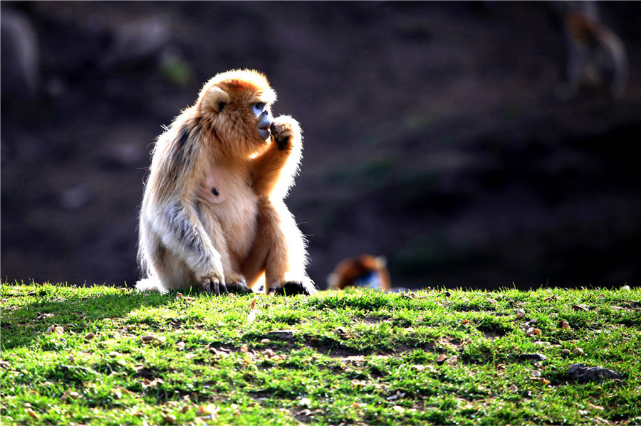

简介
金丝猴（学名：Rhinopithecus），属于灵长目猴科仰鼻猴属。因其鼻孔上仰，也被称为仰鼻猴。金丝猴是中国特有的珍贵动物，它们毛色艳丽，以金黄色的毛发最为典型，具有极高的观赏价值和科研价值。金丝猴是群居性动物，通常由几十只到上百只组成一个群体，群体内有着复杂的社会结构和行为模式。
栖息地
金丝猴主要分布在中国的四川、陕西、甘肃、云南、贵州等地的山林地区。它们偏好生活在海拔1500 - 3500米的高山密林中，这些地方植被丰富，气候凉爽湿润，为金丝猴提供了适宜的生存环境。茂密的森林不仅为它们提供了充足的食物来源，还为其提供了安全的栖息和活动空间。然而，随着人类活动范围的扩大，金丝猴的栖息地受到了一定程度的破坏和分割，对它们的生存造成了威胁。
饮食
金丝猴是杂食性动物，主要以植物性食物为主，包括各种树叶、嫩枝、果实、种子等。在不同的季节，它们会根据食物的可获得性调整饮食结构。例如，春季以嫩叶、芽苞为食，夏季则更倾向于食用果实和花朵，秋季和冬季则以树皮、坚果等为主要食物来源。此外，金丝猴偶尔也会食用一些昆虫、鸟蛋等动物性食物，以补充身体所需的蛋白质和其他营养物质。
保护
由于栖息地破坏、非法捕猎等原因，金丝猴被列为国家一级保护动物，受到中国政府和国际社会的高度关注。中国建立了多个金丝猴自然保护区，如四川白河自然保护区、陕西周至自然保护区等，通过保护栖息地、加强巡逻执法等措施，来保护金丝猴的生存环境和种群数量。同时，科研人员也在积极开展金丝猴的人工繁育和野化放归研究，以增加其种群数量和遗传多样性。此外，通过宣传教育活动，提高公众对金丝猴保护的意识，共同参与到保护工作中来。